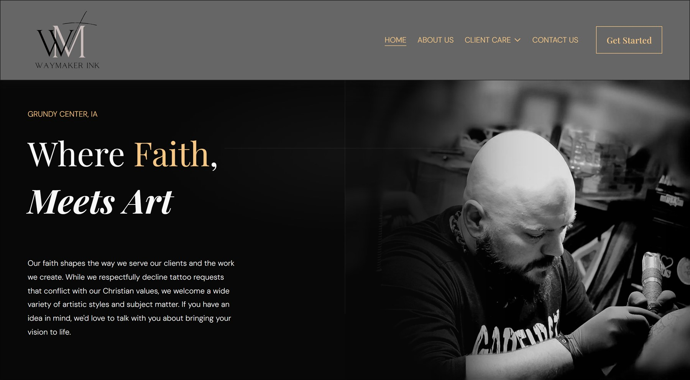
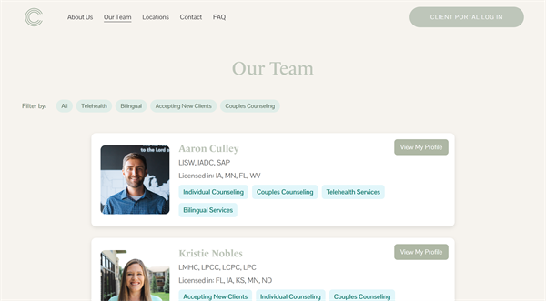
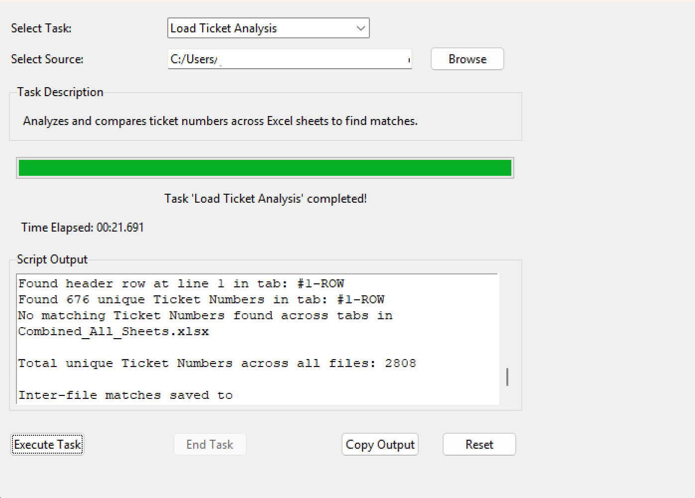

Web, automation & AI — built with purpose.
We design custom websites, automate the busywork out of your operations, and help you find where AI actually fits — for businesses across Iowa who want software that just works.
Scoped for impact, not overhead.
Whether you're launching something new or optimizing what you already run, we scope the right solution for your budget and timeline — no over-engineering, no unnecessary complexity.
Websites & web applications
Clean code, fast load times, and a structure built to scale — from a polished marketing site to a full custom web application.
Explore web development // 02 — AUTOMATIONAutomation & internal tools
We map your workflows and build targeted solutions. Clients have seen time savings exceeding 90% on previously manual processes.
Explore automation // 03 — CONSULTINGStrategy & second opinions
An outside perspective on your digital presence — scoped by the hour or project, with no long-term retainer required.
Explore consultingProjects we've built.
A selection of solutions we've crafted for businesses, organizations, and mission-driven ventures.

WayMaker Ink
Custom website design and development for a modern tattoo studio brand experience, including automation and booking request pipeline integrations.
View project
Candeo Counseling Center
Comprehensive website redesign improving user engagement and compliance.
View project
Government Data Processing
Automation tool built for Government Disaster Recovery teams, saving hundreds of hours of manual data entry and processing time.
View projectReady to start your project?
Tell us what you're working on — we'll be honest about whether we're the right fit, and the first conversation is always free.